TL;DR
Frontier generalist models can already work through a manipulation task by trying, looking and trying again. That ability comes at seconds per step and millions of tokens per episode, and so far only on gripper robots with the model inside the control loop.
We ask how to pay for that deliberation once and keep its result. We treat the frontier model as a teacher to be distilled, not as the controller to be deployed. An agent searches for a good motion in simulation, a critic verifies it, and the verified motion becomes training data for a fast policy that needs no model at run time.
To study this we propose RevoBench, a platform for testing how generalist agents behave and perform on a robot: 175 everyday tabletop tasks for a dual-arm robot with five-finger tactile hands, one action interface shared by agent-written programs, teleoperation and learned policies, and physical success checks that an agent cannot edit.
On RevoBench we build a loop in which generalist models act as scene builder, actor and critic. The critic separates physical success from contact quality, motion quality and humanlikeness. Twenty-two tasks have a physically verified episode, and six of them have a reference motion that a person approved for humanlikeness and smoothness.
1Why distill instead of deploy
Within a few months, several groups showed that a frozen frontier vision-language model can drive a robot with no learned policy in the control path[1–5]. The knowledge needed for manipulation is, to a useful degree, already inside generalist models. It arrives in an expensive form.
This is deliberate, slow reasoning, and its cost is paid again on every episode. The same studies agree on where it stops: failures concentrate in contact, such as slips after grasp and insertions under a small tilt[5]. All of them use parallel grippers without touch.
A verified trajectory is the only product of deliberation worth keeping. Once it exists, it can supervise a policy that acts at control rate. The system is therefore amortized search: the agent loop is the search operator, the critic is the value function, the accepted trajectory is the search result, and the visuomotor policy is the network that absorbs it. Game-playing systems made this move when tree search became the teacher of a fast policy[6].
2RevoBench, the platform
RevoBench is the platform on which agents are run and measured. It is built on the RevoSim simulator, which supplies physics, rendering and tactile response. Everything an agent or a policy interacts with belongs to RevoBench.
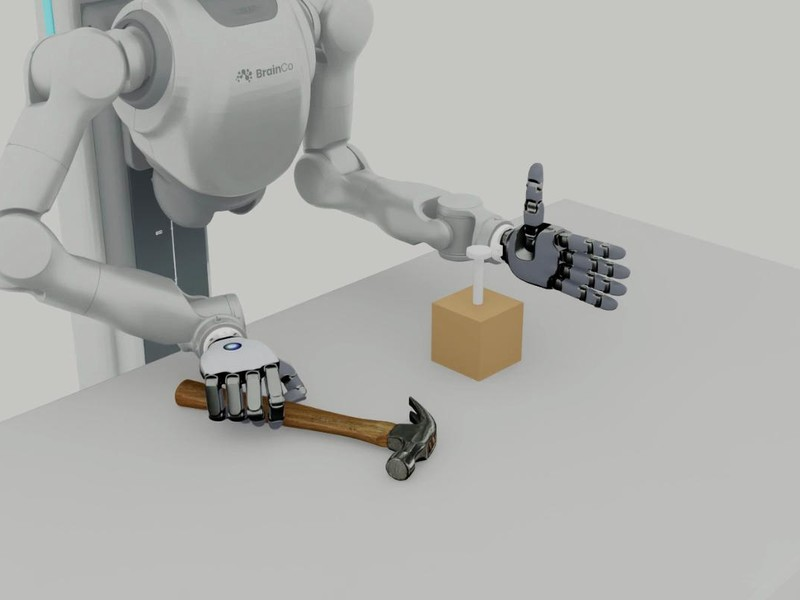
Hammer a nail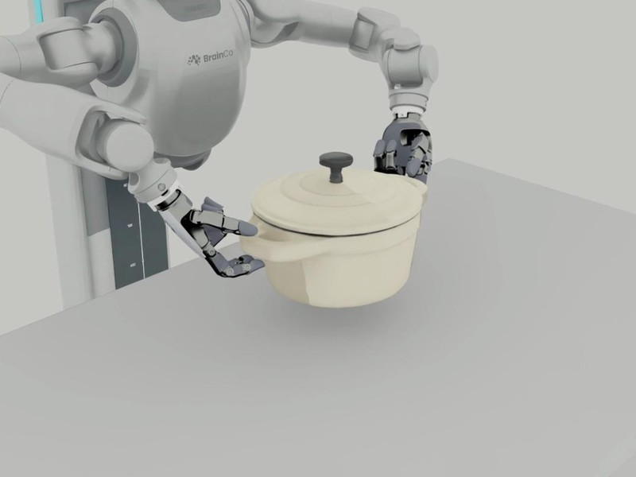
Carry a Dutch oven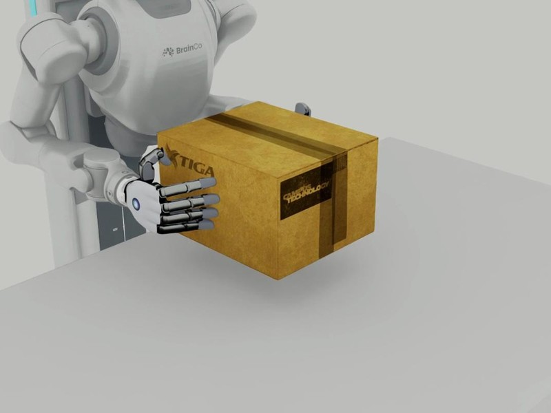
Lift a carton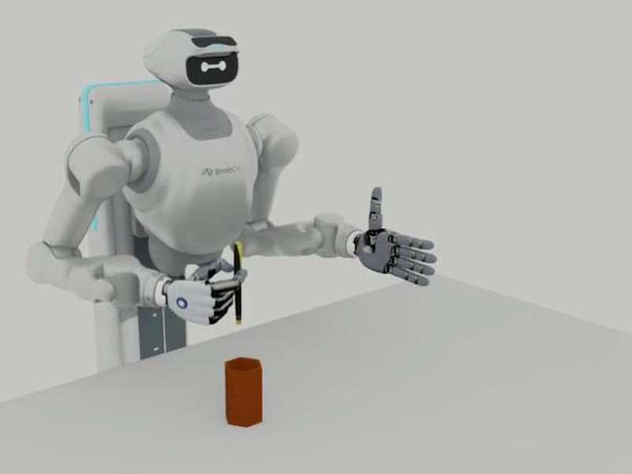
Insert a pen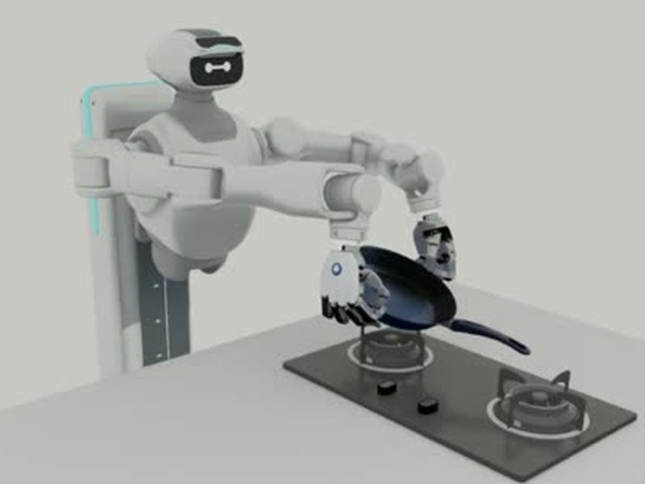
Move a pan to the stove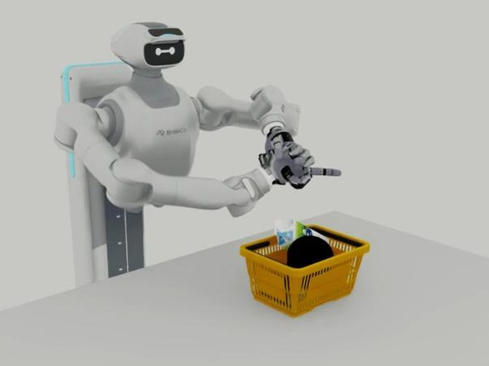
Pack groceries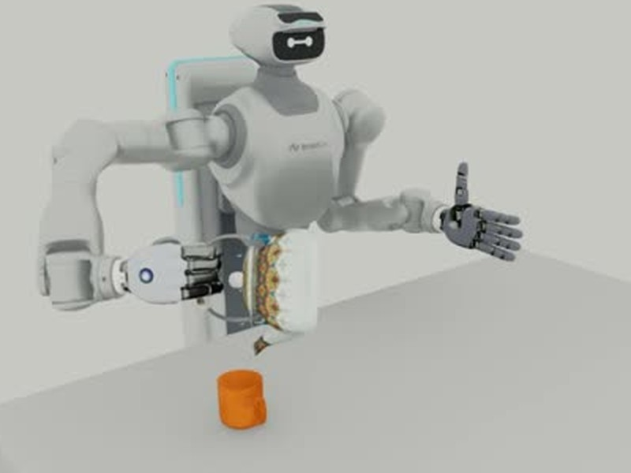
Pour from a kettle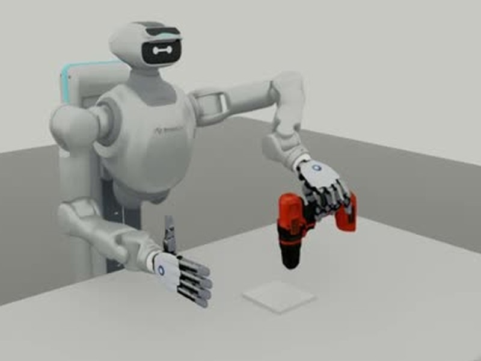
Place a power drill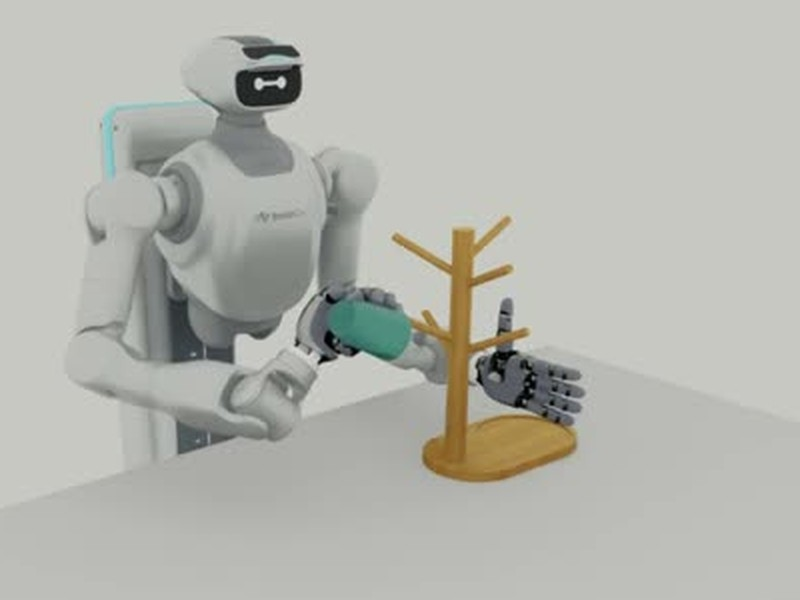
Hang a cup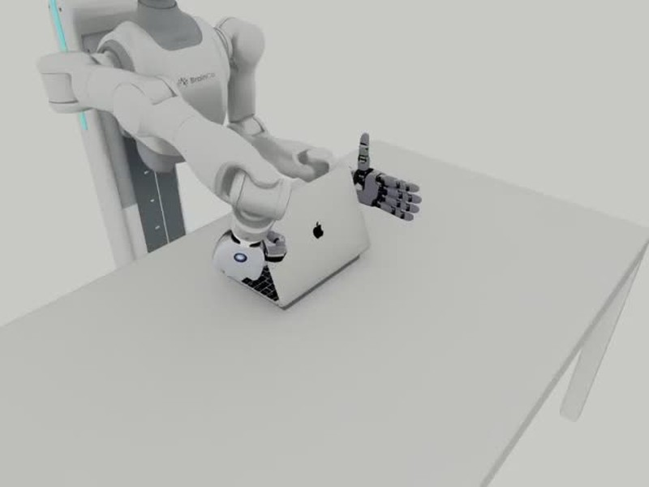
Open a laptop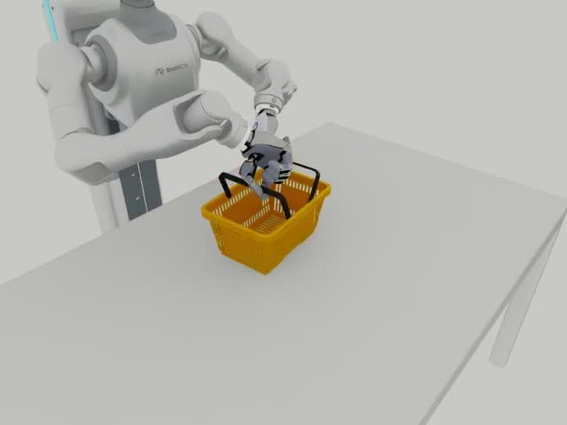
Lift a basket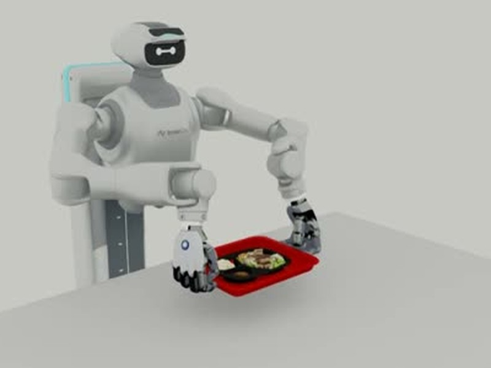
Carry a trayOne interface, one recorder
An agent-written program, a teleoperator and a learned policy all emit the same 56 named joint targets. A result therefore reflects the command source, not a controller tuned to the task. Every task records through the same recorder and exports to LeRobot format, so an agent's rollout, a teleoperated episode and a policy rollout are directly comparable.
Physical validity
No object is teleported or attached by hidden constraints during manipulation, and randomization happens only at reset behind a reachability and collision gate. These rules are what make an accepted rollout a physically valid demonstration and not an animation.
3The agent-driven loop
Generalist models take three roles. A builder constructs executable task scenes and freezes their physics and success checks. An actor writes control programs. A critic grades each rollout and returns a diagnosis. Self-correction happens only between the actor and the critic.
Cold start and warm start
In a cold start the actor writes a program from the task contract alone. The result is usually correct but segmented and slow. Its value is existence: a physically valid solution obtained with no human.
In a warm start the actor rewrites a reference trajectory into a better one. The reference fixes the task logic, so the search is spent on motion quality. Up to three priors condition the rewrite: a short human video, a text description of a reasonable execution, and the reference trajectory itself. Shown a palm-wrap grasp of a hammer, the actor abandons a fingertip pinch for a wrap.
In-context demonstrations can lower success[1] and can be over-imitated when the object changes[4], so priors are optional inputs whose effect is measured, not assumed.
Sedimentation
An accepted solution leaves reusable pieces behind: grasp primitives, approach routines and verification snippets. Each is stored as a short note with its code, and is re-executed and re-verified in a new scene before its result counts.
4A critic with four layers
The critic maps a rollout to a decision and a diagnosis. Its layers are kept separate because they deserve different levels of trust.
Success
Physical predicates evaluated on simulator state. Never judged by a language model.
Contact
Tactile maps and wrenches: intended surfaces, stable normal force, no slip.
Motion
Step count, integrated jerk, pause time and bimanual synchrony.
Humanlikeness
A model's judgment of the video against the prior. Validated against human raters.
Touch is used twice. The actor reads tactile records to refine a grasp it cannot see, and the critic uses them to reject episodes that look successful on camera but rest on an unstable contact. On rejection the critic names the phase, the failing layer and the evidence, for example: transport phase, thumb pressure drops to zero at step 212, object rotates in hand.
5Verified tasks
Twenty-two tasks have a complete recorded episode that passed the task's physical checks and the data checks. For six of them, a later run was also approved by a person for humanlikeness and smoothness; those six are the first warm-start references.
| Task | Approved run | Steps at 60 Hz | Duration | Recorded caveat |
|---|---|---|---|---|
| Insert a pen | p17 | 1756 | 29.3 s | Approval covers this version only |
| Carry a Dutch oven | v35 | 1490 | 24.8 s | One finger joint over its limit by 1e-5 rad |
| Hammer a nail | h20 | 1218 | 20.3 s | Middle-finger jerk still high during the strike |
| Arrange condiments | s9 | 2645 | 44.1 s | Full-body collision check not completed |
| Lift a carton | c20 | 666 | 11.1 s | Nominal initial state only |
| Stack blocks | retry029 | 1765 | 29.4 s | Diagnostic recording; full data check still open |
A reference is the end of a search. The Dutch oven reference is the survivor of 30 candidate versions, 17 of which were physically successful. For the hammer, an earlier physically successful version was rejected in review before the approved one. This is the deliberation the loop is meant to pay for once.
6Three tracks and what we measure
RevoBench groups tasks by the demonstration data they ship with. The tracks pose different questions and are not difficulty levels.
| Track | Tasks | Data shipped per task | Who it tests | Question |
|---|---|---|---|---|
| L1 Many-demo | 5 | 30 to 50 verified generated demos, plus 30 teleoperated demos | ACT, Diffusion Policy, VLA | Does generated data train policies? |
| L2 One-demo | 20 to 30 | One high-quality demo, with style and texture randomization | Warm-start agents | How well does an agent use one example? |
| L3 Zero-demo | 140+ | None | Cold-start agents | What can an agent do from nothing? |
Every result is reported with three quantities beside success rate.
- Conversion cost. Tokens, dollars and wall-clock time per accepted demonstration, and operator minutes per teleoperated demonstration.
- Motion and contact quality. Graded independently of success by the critic's computed layers.
- Demonstration equivalence. The number of teleoperated demonstrations needed to match a policy trained on N generated ones, per generated demonstration. A value of 1 means parity.
The agent tracks ship one fixed reference harness: the same observations, tools, call budget and time limit for every agent. Without it, results are not comparable.
7Experiments
| ID | Question | Design | Status |
|---|---|---|---|
| E1 | Can agents solve dexterous tasks from nothing? | 30 zero-demo tasks, at least three models, two open harnesses ported as baselines | 22 of 30 solved |
| E2 | Does a prior buy quality and save cost? | Same 30 tasks, warm start. Ablate video, text, reference trajectory, and their format and number. Changed-object test for over-imitation | 6 references |
| E3 | Is generated data worth as much as teleoperated data? | 5 many-demo tasks. 30 generated against 30 teleoperated demos, same policy and budget. Scaling at 5, 10, 30, mixed sets, generated-only to 100+ | not started |
| E4 | Does the loop get cheaper as it runs? | Grow the skill library, re-run stored skills, test transfer on held-out tasks | not started |
| E5 | Can the critic be trusted? | Blind human ratings against each critic layer. Critic with and without touch | not started |
| E6 | What does it cost? | Log tokens, dollars and time for every run of E1 to E3 | not started |
8Limitations
- Self-judging. The same model family generates and grades. Acceptance therefore rests on the three computed layers, and the humanlikeness layer has to be validated against human raters.
- Diversity. Generated demonstrations may be near-copies of each other. We report trajectory diversity and evaluate under perturbed initial states.
- Privileged teacher. The actor may read simulator state while it searches. The student policy sees only cameras, joint state and touch.
- Simulation. All claims are about simulation in RevoBench. Removing the operator from per-episode collection in simulation makes the loop a candidate for real tasks. It is not evidence of real-robot success.
- Human role. Priors and some reference trajectories come from people. Humans leave the per-episode loop, not the pipeline.
References
- An Unexpected Robot Policy: Early Evaluations of GPT-6 Astra on RoboDojo and Beyond. arXiv:2609.24170, 2026.
- Transferring the Intelligence of VLMs to Robotic Control. arXiv:2609.22966, 2026.
- In-Context Robot Learning with VLM Agents. arXiv:2609.19138, 2026.
- F. Liu et al. RoboICL: Embodied In-Context Learning with GPT-6 Astra. arXiv:2609.34261, 2026.
- H. Gao et al. HexaShell: A Thin Harness for Exploring the Limits of VLM Agents as Robot Coding Agents. arXiv:2610.23479, 2026.
- D. Silver et al. Mastering the Game of Go without Human Knowledge. Nature 550, 2017.
BibTeX
@misc{revobench2026loop,
title = {From Generalist Models to Dexterous Policies: An Agent-Driven Loop
for Task Generation, Demonstration Synthesis, and Policy Learning},
author = {Anonymous},
year = {2026},
note = {Draft}
}